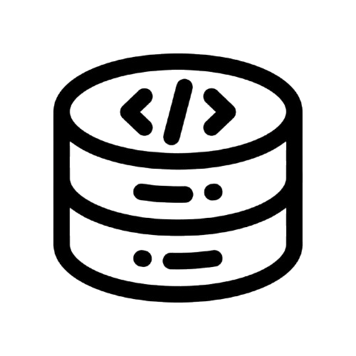
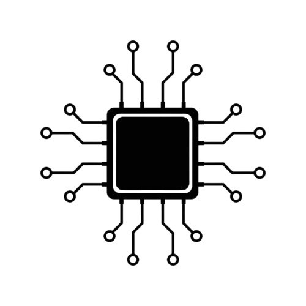
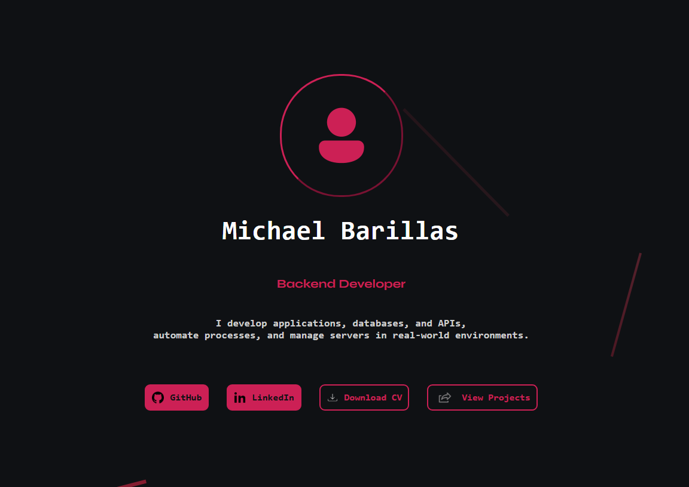
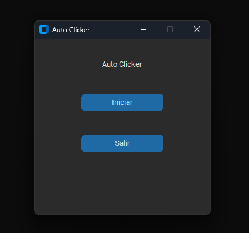

Creatividad
Trabajo en equipo
Pensamiento crítico
Adaptabilidad
Resolución de problemas
Proactividad
Gestión de tiempo


Durante mi práctica profesional en XperttaLegal, un reconocido bufete de abogados, participé activamente en el desarrollo e implementación de soluciones de automatización orientadas a optimizar los flujos de trabajo internos del despacho jurídico.
Diseñé y desarrollé herramientas en Python para la extracción y procesamiento automatizado de información proveniente de documentos legales y fuentes de datos públicas, reduciendo significativamente los tiempos de gestión documental. Integré APIs de inteligencia artificial para asistir en la clasificación y redacción de documentos administrativos, elevando la eficiencia operativa del equipo.
Implementé un sistema de monitoreo automatizado de publicaciones judiciales con ejecución programada en infraestructura cloud (Google Cloud Run), garantizando la disponibilidad continua. Esta experiencia consolidó mis buenas prácticas de ingeniería en un entorno profesional real con altos estándares de confidencialidad y calidad.
Visual Studio
Visual Studio Code
MySQL
Linux
Ubuntu Server
XAMPP
 Proyecto Académico
Proyecto Académico
Sistema web empresarial con ASP.NET Core MVC 8 y SQL Server. Autenticación por cookies con roles Admin/User, control transaccional de stock con rollback automático, dashboard con Chart.js y reportería dinámica con filtros por fecha.
Pipeline automatizado en Python que scrapea el Boletín Judicial de Costa Rica diariamente con Selenium Stealth, extrae datos estructurados con regex, clasifica registros con Gemini AI y sube un reporte Excel a Google Drive. Corre en Cloud Run.
App de escritorio en Python + PyQt5 para un bufete de abogados. Lee archivos Word, extrae campos clave y genera borradores legales con la API de Gemini. Gestión multi-entidad, almacenamiento persistente y exportación a Excel. Uso real en producción.
API REST con FastAPI que hace scraping al Registro Civil de Costa Rica usando Selenium. Consulta personas por cédula o nombre completo — incluyendo padres e hijos — con documentación Swagger integrada.

Este sitioEl sitio que estás viendo ahora mismo. Construido desde cero con HTML, CSS y JavaScript vanilla — sin frameworks. Animaciones con Anime.js, cambio de idioma ES/EN en tiempo real, modo claro/oscuro y diseño completamente responsive.
Tienda online multi-página con catálogo, detalle de producto, filtros por precio y carrito persistente con localStorage. Construida con JavaScript ES6 modular y Bootstrap 5 — sin dependencias adicionales ni frameworks JS.
Cliente Real
Software de escritorio desarrollado y vendido a un negocio local. Gestiona inventario, ventas y clientes con interfaz Windows Forms y base de datos SQLite integrada. Entregado como producto comercial funcional.

AutomatizaciónApp de escritorio en Python con interfaz dark mode (CustomTkinter) para automatizar clicks en Windows. Configura posición, intervalo desde 0.1s y tipo de click. Control con barra espaciadora. Ventana flotante siempre visible.
San José - Costa Rica
 Git Hub
Git Hub